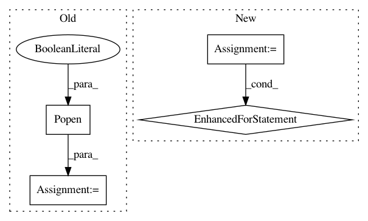

d61cbc3fc1ef837677c5402b564a30671c9e140f,tests/integration_tests/flows/common.py,,stop_mindsdb,#Any#,187
Before Change
def stop_mindsdb(sp=None):
if sp:
sp.kill()
sp = subprocess.Popen("kill -9 $(lsof -t -i:47334)", shell=True)
sp.wait()
sp = subprocess.Popen("kill -9 $(lsof -t -i:47335)", shell=True)
sp.wait()
sp = subprocess.Popen("kill -9 $(lsof -t -i:47336)", shell=True)
After Change
def stop_mindsdb(sp=None):
if sp:
sp.kill()
conns = net_connections()
pids = [x.pid for x in conns
if x.pid is not None and x.status == "LISTEN"
and x.laddr[1] in (47334, 47335, 47336)]
for pid in pids:
try:
os.kill(pid, 9)
// process may be killed by OS due to some reasons in that moment
except ProcessLookupError:
pass
// sp = subprocess.Popen("kill -9 $(lsof -t -i:47334)", shell=True)
// sp.wait()
// sp = subprocess.Popen("kill -9 $(lsof -t -i:47335)", shell=True)
// sp.wait()
// sp = subprocess.Popen("kill -9 $(lsof -t -i:47336)", shell=True)
// sp.wait()
def run_environment(config, apis=["mysql"], override_integration_config={}, override_api_config={}, mindsdb_database="mindsdb", clear_storage=True):
temp_config_path = prepare_config(config, mindsdb_database, override_integration_config, override_api_config, clear_storage)
config = Config(temp_config_path)
In pattern: SUPERPATTERN
Frequency: 3
Non-data size: 4
Instances
Project Name: mindsdb/mindsdb
Commit Name: d61cbc3fc1ef837677c5402b564a30671c9e140f
Time: 2020-12-23
Author: ilya@mindsdb.com
File Name: tests/integration_tests/flows/common.py
Class Name:
Method Name: stop_mindsdb
Project Name: deepfakes/faceswap
Commit Name: 7d89961113c84ee95e629b759e42e4839a860bba
Time: 2018-12-05
Author: 36920800+torzdf@users.noreply.github.com
File Name: setup.py
Class Name:
Method Name: check_cplus_plus
Project Name: SpiNNakerManchester/sPyNNaker
Commit Name: 2f2cfbf4cccfa0f9b1aaf114baa3c1be3c777f5e
Time: 2017-12-18
Author: donal.k.fellows@manchester.ac.uk
File Name: spynnaker/pyNN/external_devices_models/push_bot/push_bot_ethernet/push_bot_wifi_connection.py
Class Name: PushBotWIFIConnection
Method Name: is_connected